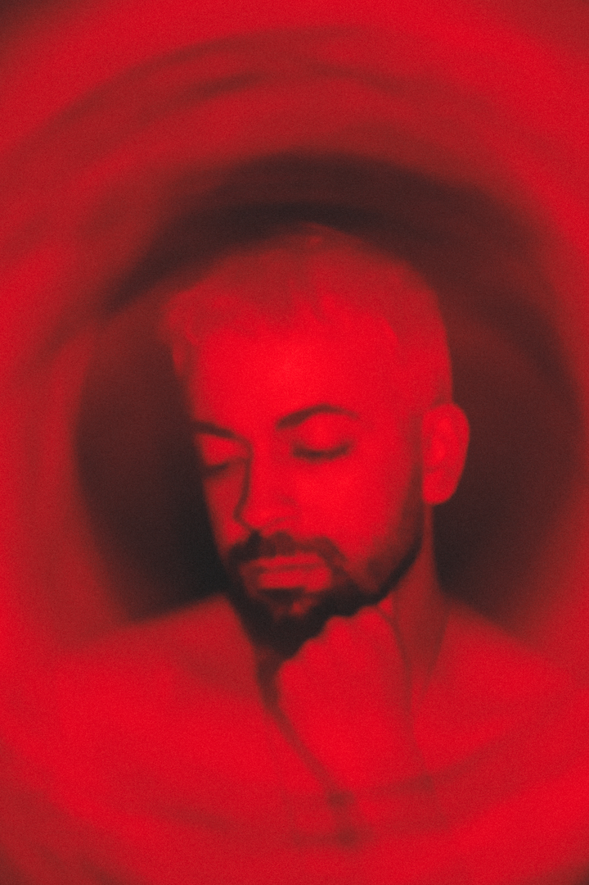

confissão
Com olhos apaixonados, crio mensagens de amor à natureza através das máquinas humanas. Ponho num pedestal os que brotam, rastejam e caminham na escuridão enquanto arrasto ao chão os delírios que acontecem no céu.
Confesso não me considerar artista, mas às vezes sangro arte para me curar. E, para sobreviver, ofereço meu olhar para eternizar seus melhores amigos e entes queridos.
Aqui você navega por sonhos, ilusão e romance e, como em uma trilha na floresta, a cada vez que você visita meu espaço as criaturas e criações serão diferentes.
Com sorte você também se corrompe pela natureza.